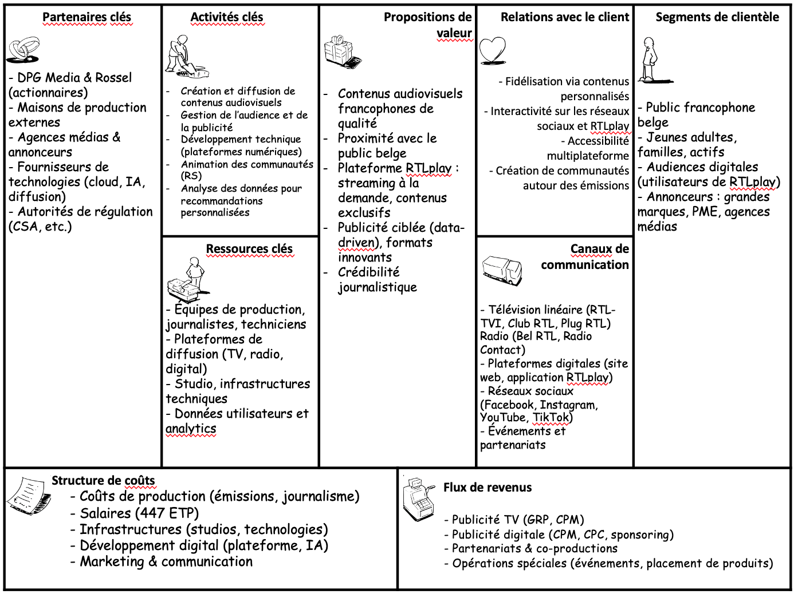

Un univers audiovisuel au service de la stratégie
RTL Belgium SA est une société anonyme de droit belge, constituée en 1985 et enregistrée sous le numéro d’entreprise BE 0428.201.847. Son siège social est établi à Avenue Jacques Georgin 2, 1030 Bruxelles. En tant que société anonyme, elle dispose d’une personnalité juridique propre et son capital est divisé en actions, ce qui permet une certaine flexibilité en matière d’actionnariat.
Depuis le rachat en 2022, RTL Belgium est détenue à parts égales (50/50) par deux groupes de presse majeurs : DPG Media, acteur flamand de premier plan, et Rossel, éditeur du journal Le Soir et acteur francophone majeur. Cette structure capitalistique reflète une volonté de consolidation du paysage médiatique belge.
RTL Belgium exerce ses activités dans le secteur audiovisuel privé, notamment à travers des chaînes de télévision (RTL-TVI, Club RTL, Plug RTL) et des stations de radio (Bel RTL, Radio Contact). L’entreprise emploie environ 447 équivalents temps plein (ETP), ce qui reflète une structure de taille significative, mobilisant des compétences variées dans les domaines du journalisme, de la production, de la technique et du digital.
Elle opère dans le respect du Code des sociétés et associations (CSA) ainsi que des réglementations spécifiques au secteur des médias en Belgique.
Les comptes annuels déposés par RTL Belgium SA à la Banque Nationale de Belgique (BNB) témoignent d’une situation financière globalement saine et stable. Pour l’exercice 2024, l’entreprise a déclaré un chiffre d’affaires supérieur à 225 millions d’euros, confirmant sa position de leader dans le paysage audiovisuel francophone belge. La société affiche une structure de coûts bien maîtrisée, ce qui lui permet de préserver une rentabilité malgré un environnement concurrentiel en forte mutation (essor du streaming, évolution des usages médias, pression sur les revenus publicitaires). Le résultat d’exploitation reste positif, traduisant une capacité à générer des marges opérationnelles. L’entreprise emploie environ 447 équivalents temps plein (ETP), ce qui reflète une activité de grande envergure avec une composante humaine significative. Ce volume de personnel témoigne également de la diversité des métiers présents au sein de l’organisation (production, journalisme, technique, marketing, digital...). Bien que les données détaillées sur les ratios de rentabilité, de solvabilité ou de liquidité ne soient pas publiques dans ce cadre synthétique, les éléments disponibles permettent d’observer une gestion prudente et une bonne maîtrise des équilibres financiers.
RTL Belgium a pour mission de produire et diffuser des contenus médiatiques francophones de qualité, qui informent, divertissent et reflètent les réalités de la société belge. À travers ses chaînes de télévision, radios et plateformes digitales, l’entreprise s’engage à répondre aux attentes d’un public large et diversifié, tout en respectant les principes fondamentaux du journalisme.
D’ici cinq ans, RTL Belgium ambitionne de devenir le premier choix audiovisuel en Belgique francophone, en consolidant sa présence sur l’ensemble des canaux (TV, radio, digital) et en proposant une expérience média personnalisée, interactive et accessible sur tous les supports.
RTL Belgium déploie une stratégie d’innovation transversale, qui touche à la fois les produits, les processus, le marketing et l’organisation. Cette approche s’inscrit dans une volonté d’adaptation continue aux mutations technologiques et aux attentes du public belge francophone.
Ces différentes formes d’innovation s’alignent sur les critères définis par l’Union européenne en matière de capacité d’innovation, et positionnent RTL Belgium comme un acteur dynamique au sein de l’écosystème audiovisuel.
RTL Belgium évolue dans un environnement concurrentiel complexe et en mutation rapide. Une analyse selon le modèle des cinq forces de Porter permet de mieux comprendre les défis stratégiques auxquels l’entreprise est confrontée :
Conclusion : malgré une forte pression concurrentielle, RTL Belgium bénéficie d’un positionnement avantageux, combinant une présence historique en télévision, une forte audience digitale via RTLplay, et un ancrage local qui renforce sa légitimité auprès du public et des annonceurs.
RTL Belgium segmente son audience principalement selon deux axes :
L’entreprise cible prioritairement les consommateurs francophones belges actifs sur le digital, à la recherche de contenus à la fois accessibles, fiables et proches de leur quotidien. Ce public est friand d’actualités, de divertissement local et de formats courts, ce qui justifie l’accent mis sur les plateformes numériques.
RTL Belgium se positionne comme un média généraliste, fiable et ancré localement, combinant le professionnalisme journalistique à une offre diversifiée de divertissement. Elle entend être perçue comme une marque de confiance, accessible sur tous les supports, et capable d’accompagner les évolutions des usages médias.
La stratégie de différenciation repose sur plusieurs leviers clés :
Le modèle économique de RTL Belgium repose principalement sur une stratégie publicitaire multicanal, combinant les revenus issus de la télévision linéaire et ceux des plateformes digitales. À cela s’ajoutent des partenariats commerciaux ponctuels (sponsoring, co-productions, contenus de marque).
Les tarifs publicitaires sont établis selon des modèles de tarification reconnus dans le secteur :
RTL Belgium propose une offre modulable et différenciée, adaptée aux besoins variés des annonceurs :
Cette souplesse tarifaire et formatique permet à RTL Belgium de toucher aussi bien les grandes marques que les annonceurs locaux, tout en optimisant ses revenus publicitaires selon les canaux et les audiences ciblées.
RTL Belgium présente une situation financière globalement saine, fondée sur des revenus solides, une gestion maîtrisée des charges et une capacité d’adaptation aux mutations du marché.
Conclusion : RTL Belgium affiche une bonne santé financière, marquée par un équilibre entre performance économique, rigueur de gestion et investissements stratégiques. Cela lui permet de conserver sa place de leader tout en s’adaptant aux défis du numérique.
RTL Belgium bénéficie de plusieurs atouts majeurs. Sa marque historique et bien implantée en Belgique francophone lui confère une forte notoriété et une légitimité auprès du public. Elle dispose d’un écosystème multiplateforme performant (TV, radio, digital), lui permettant de toucher un large éventail de consommateurs. La production locale de contenus, adaptée aux réalités culturelles belges, renforce sa proximité avec l’audience. Enfin, sa capacité d’innovation continue (technologies, formats, IA) lui permet de rester compétitive dans un marché en mutation.
L’un des points de fragilité de RTL Belgium réside dans sa dépendance aux revenus publicitaires, exposés aux cycles économiques et à la pression tarifaire. De plus, l’entreprise doit faire face au vieillissement de son audience traditionnelle, notamment sur les canaux TV linéaires, ce qui complique le renouvellement de sa base d’audience.
Le développement du streaming vidéo à la demande représente un levier de croissance important, notamment via la plateforme RTLplay. La valorisation des données d’audience (via le ciblage publicitaire ou la personnalisation des contenus) ouvre de nouvelles perspectives de monétisation. Par ailleurs, la possibilité de nouer des alliances stratégiques avec d’autres groupes médias ou acteurs technologiques pourrait renforcer sa position sur le marché.
RTL Belgium doit faire face à la concurrence croissante des plateformes mondiales telles que Netflix, YouTube ou TikTok, qui captent une part croissante de l’attention et des revenus publicitaires. L’évolution rapide des technologies numériques exige des investissements constants. Enfin, la fragmentation des publics, avec des usages de plus en plus éclatés selon les générations et les supports, rend la fidélisation plus complexe.
